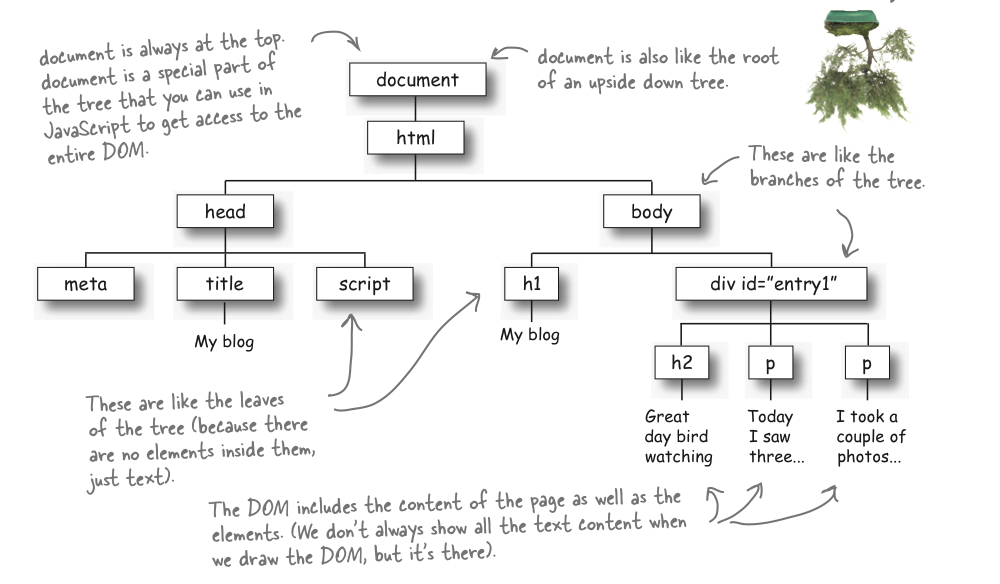
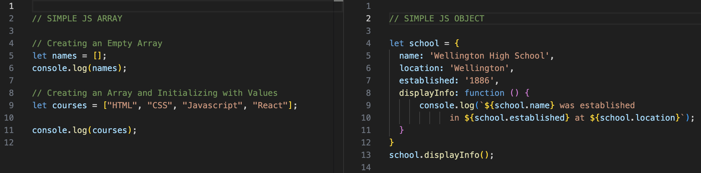

JavaScript Fundamentals
Thursday, 12 September 2024
This endeavors to be a non-technical blog post about JavaScript (JS) fundamentals. Answering the questions below as if talking to a friend who wants to learn more about these concepts. Code examples and diagrams are provided.
- An analogy to describe JavaScript and its relationship to HTML and CSS.
One of the most apt analogies that I have seen to describe JavaScript and its relationship to HTML and CSS is a building. And if you were to imagine a web page as a building or house. HTML would be the building timbers - the framing of the house, including its floors, walls, and roof - providing the building structure. CSS would be the building styling. Perhaps the architraves, skirting, and paintwork, alongside all the interior and exterior decorations. Finally, JS would be the (often) hidden parts of the building. The house heating, plumbing, technology, and wiring. Making it run in interactive and functional ways.
- Explain control flow and loops using an example process from everyday life.
The default control flow for JS code is from top to bottom (line-by-line) - the order in which the individual statements, instructions, or function calls are executed or evaluated.
The control flow can be changed by conditional statements, loops, and function calls (see question 5 for more details about function calls). Changing the control flow of our JS code helps make web pages even more dynamic, interactive, and powerful.
What are conditional statements, loops, and function calls that regulate the JS code?
- Conditional statements: Conditional statements regulate JS code behavior. They determine whether pieces of code can run (or are skipped).
- Loops: Loop are JS code that is used to repeat a set of instructions. For example, if you wanted to run the same code repeatedly, each time with a different value. They continue until certain conditions are met.
-
Function calls: Functions first involve a definition.
However, to be executed the function needs to be involved. This is
often described a
calling a function
(or a function call).
We can think of control flows – conditional statements, loops, and function calls – as akin to a coaching session on the football field. The JS code being like the coach and the players. With the conditional statements, loops, and function calls being the various calls made by the coach as the players go through their exercises and drills. Choosing to some and not others; repeating some until they are done well; and overall going through and reflecting on the coaching session.
- Describe what the DOM is and an example of how you might interact with it.
The Document Object Model (DOM) is the data representation of the objects that comprise the web document content and structure. It is a programming interface (API) that espresents the HTML document as a tree of nodes. JS can interact with the DOM changing text and styles. It can also add new elements on the go, making web pages more dynamic and interactive. JS can listen for a mouse click on a button for instance, and following that event, react, and display for example, a message or change an image.
The Document Object Model (DOM)

Source: Wellesley.edu
- Explain the difference between accessing data from arrays and objects.
Arrays and objects are two different ways of classifying, structuring, and returning data. Objects are notably a powerful JS data type as they are used in almost everything. For example, Functions, Arrays, and Regular Expression are objects. Objects themselves are also objects.
- Arrays: Are a collection of data and a data structure that is stored in a location sequence. Arrays are a special type of objects. They are especially useful when creating ordered collections where items in the collection can be accessed by their numerical position in the list. Arrays are zero based. They can be accessed by calling the index number such as 0, 1, 2, 3, … e.g., array[0].
-
Objects: Are made up of a collection of properties. These
properties include a name (or key) and a value. They represent a
characteristics of something
in JS code. That could be a person, a building, a book, or a game character – anything that comprises or can be defined by a set of characteristics. The properties of an object can be called by using dot notation e.g., object.property or bracket notation e.g., object['property'].
Arrays and objects

- Explain what functions are and why they are helpful.
A JS function is like a procedure – a set of statements that performs a task or calculates a value. Functions remove the need for repeating the same code. For it to be a function it should take some input and return an output where there is a relationship between the input and output. The code inside the function is executed when it is called. Functions are a fundamental JS building block.
Key references
Code Institute Control Flow in JavaScript.
JavaScrip Cheatsheet Javascript Control Flow.
MDN (Mozilla) Control Flow.
W3 Schools JavaScript Arrays.
W3 Schools JavaScript Objects.